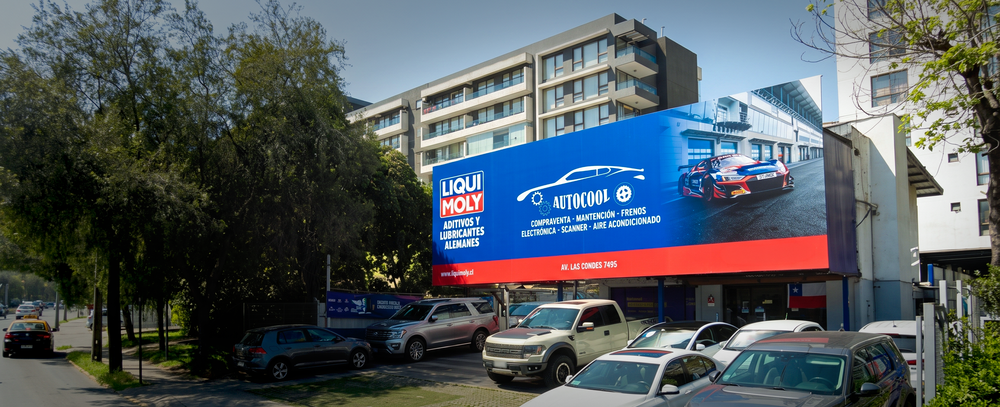

CONOCE EL CÍRCULO
El Círculo de confianza donde la mejor mecánica y la tecnología se encuentran.
3 Décadas Evolucionando a la Par con la Tecnología Automotriz
De un taller especializado en climatización a un centro de servicio automotriz integral en el corazón de Las Condes.
Pasión y Equipamiento Integral
Comenzamos con la visión de entregar una alternativa seria y profesional en equipamiento integral y climatización. Desde el primer día priorizamos la honestidad en cada diagnóstico.
Inversión en Tecnología Global
A medida que los autos incorporaron computadoras y sensores complejos, incorporamos escáneres avanzados e importación directa de repuestos del mercado internacional.
Consolidación en Las Condes
Hoy, consolidados en el corazón de Las Condes, nos reconocen como el verdadero Círculo Autocool: un taller de confianza donde la atención es personalizada y sin engaños.
¿Por qué los conductores eligen Círculo Autocool?
Cuatro compromisos fundamentales que definen nuestra manera de trabajar día a día.
El Círculo de Confianza
Formamos lazos reales con nuestros clientes. Te explicamos en detalle cada repuesto reemplazado, entregándote informes técnicos claros y transparentes sin cobros sorpresa.
Servicio Multimarca
Atendemos todas las marcas y modelos, sin excepción, con equipos de diagnóstico y repuestos homologados adaptados a cada fabricante.
Diagnóstico Electrónico
Empleamos las últimas tecnologías a nivel mundial para diagnosticar fallas complejas en climatización, electrónica, frenos y motor que otros talleres no logran resolver.
Personal Calificado
Sólo permitimos que técnicos y mecánicos certificados abran el capó de tu vehículo. Su constante capacitación garantiza procedimientos que respetan la pauta original del fabricante.
"No solo reparamos vehículos; cerramos el Círculo de la confianza con cada cliente."
Sabemos lo frustrante que es llevar un automóvil al taller sin saber si el diagnóstico es real o si el repuesto se instaló correctamente. En Círculo Autocool rompemos esa incertidumbre: entregamos respuestas técnicas respaldadas, atenciones amables y la tranquilidad de saber que tu vehículo quedó en manos de expertos.

El Rostro Humano del Círculo
Detrás de cada diagnóstico computarizado y reparación impecable hay técnicos y asesores apasionados por la excelencia automotriz.

Claudio Ramírez
Jefe de Taller & Diagnóstico Máster
"La precisión técnica es tan vital como la transparencia con el cliente. Si un repuesto se puede ajustar en lugar de cambiar, esa siempre será nuestra recomendación honesta."

Felipe Morales
Especialista en Climatización A/C & Refrigerante
"El sistema de climatización es la salud respiratoria de tu vehículo. Detectar microfugas a tiempo evita daños mayores al compresor y garantiza confort total."

Gonzalo Fuentes
Técnico en Autotrónica & Escáner Multimarca
"Los autos modernos son verdaderas computadoras sobre ruedas. Mi pasión es resolver las fallas electrónicas complejas que otros talleres dan por imposibles."

Carolina Soto
Asesora de Servicio & Atención al Cliente
"Nos aseguramos de que entiendas exactamente qué se le realiza a tu auto. La tranquilidad y comunicación continua con el cliente es la prioridad en el Círculo."
¿Listo para darle el mejor cuidado a tu vehículo?
Visítanos o escríbenos directamente a nuestro WhatsApp de atención rápida.